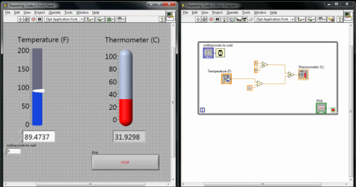
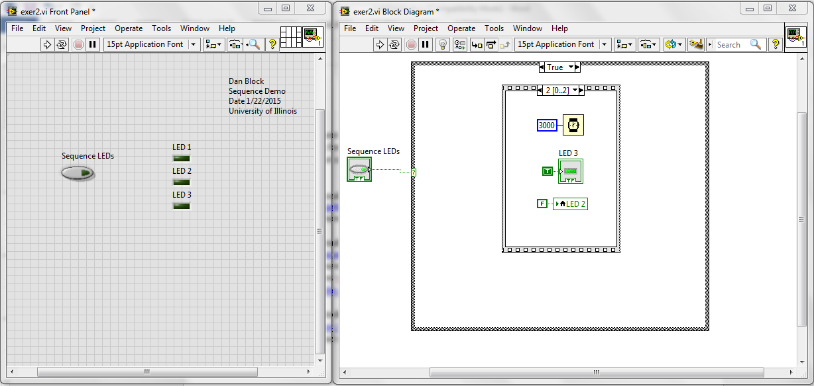
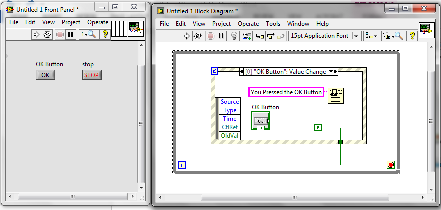
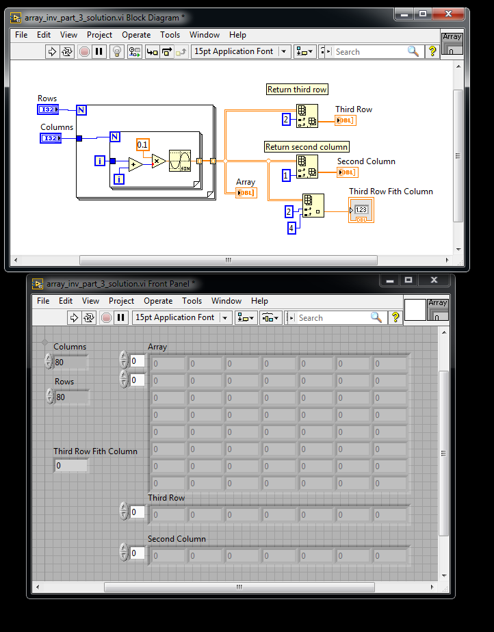
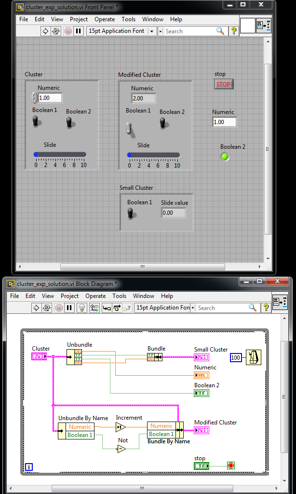

SE 423 Mechatronics
LabVIEW Assignment #1
Due before 5PM Thursday, February 05. Demonstrate your five LABVIEW programs working. Grading for this assignment is simply full credit if you did the assignment and no credit if you did not complete the assignment. Make sure to ask questions if you get stuck.
Read through at least the first two sections at the site http://www.ni.com/gettingstarted/labviewbasics LABVIEW Environment Basics and Dataflow Programming Basics and watch at least the first two videos and the tenth video at the site https://www.youtube.com/playlist?list=PLB968815D7BB78F9C
Reproduce (does not have to be exactly the same) the Fahrenheit to Celsius LABVIEW program that uses a loop structure to continuously run until a Stop button is pressed. Add some bells and whistles if you would like.

Read through all 12 sections at the site http://www.ni.com/gettingstarted/labviewbasics and watch the first 10 videos at the site https://www.youtube.com/playlist?list=PLB968815D7BB78F9C.
You can find other good YouTube videos. Here are a few others I found to get you started
Furthermore, watch the YouTube video below that introduces sequence structures: https://www.youtube.com/watch?v=DjN5Fpsjwng.
To give you an introduction to sequence structures, reproduce the VI demonstrated in the YouTube video https://www.youtube.com/watch?v=03PykG1O1x0. You may need to find online help on “Case structures” as they are used in this video, but are not explained.

To give you an introduction to event structures, reproduce the VI demonstrated in the YouTube video https://www.youtube.com/watch?v=8eO64fo3Pho. You do not need to demonstrate the initial “polling” VI. Just the event structure VI.

Read through the Array and Clusters Tutorial at https://www.youtube.com/watch?v=rzOT1zXBDiE and https://www.youtube.com/watch?v=_GlQ1riWjPc&list=PLB968815D7BB78F9C. Then reproduce the following exercises. See how a “for loop” can create a multidimensional array and use the Index Array to pull out a single row, a single column, and a single element. Sine is found under Mathematics→Elementary→Trig

Create a Cluster and then produce two Clusters similar to the first.
